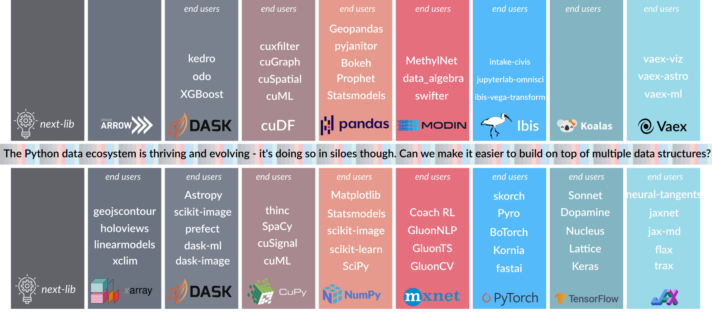
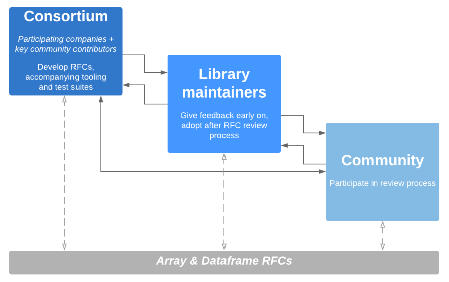
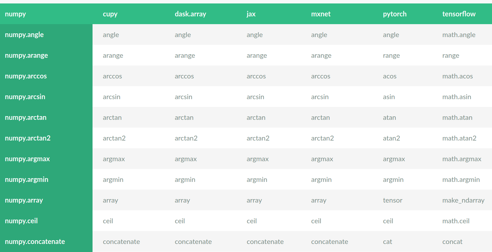

Over the past few years, Python has exploded in popularity for data science, machine learning, deep learning and numerical computing. New frameworks pushing forward the state of the art in these fields are appearing every year. One unintended consequence of all this activity and creativity has been fragmentation in the fundamental building blocks - multidimensional array (tensor) and dataframe libraries - that underpin the whole Python data ecosystem. For example, arrays are fragmented between Tensorflow, PyTorch, NumPy, CuPy, MXNet, Xarray, Dask, and others. Dataframes are fragmented between Pandas, PySpark, cuDF, Vaex, Modin, Dask, Ibis, Apache Arrow, and more. This fragmentation comes with significant costs, from whole libraries being reimplemented for a different array or dataframe library to end users having to re-learn APIs and best practices when they move from one framework to another.

Today, we are announcing the Consortium for Python Data API Standards, which aims to tackle this fragmentation by developing API standards for arrays (a.k.a. tensors) and dataframes. We aim to grow this Consortium into an organization where cross-project and cross-ecosystem alignment on APIs, data exchange mechanisms and other such topics happens. These topics require coordination and communication to a much larger extent than they require technical innovation. We aim to facilitate the former, while leaving the innovating to current and future individual libraries.
Want to get started right away? Collect data on your own API usage with python-record-api. And for array or dataframe maintainers: we want to hear what you think – see the end of this post.
Bootstrapping an organization and involving the wider community
The goal is ambitious, and there are obvious hurdles, such as answering questions like “what is the impact of a technical decision on each library?”. There’s a significant amount of engineering and technical writing to do to create overviews and data that can be used to answer such questions. This requires dedicated time, and hence funding, in addition to bringing maintainers of libraries together to provide input and assess those overviews and data. These factors motivated the following approach to bootstrapping the Consortium:
- Assemble a consortium of people from interested companies (who help fund the required engineering and technical writing time) and key community contributors.
- Form a working group which meets weekly for an hour, sets the high-level goals, requirements, and user stories, and makes initial decisions.
- Several engineers with enough bandwidth will do the heavy lifting on building the required tooling, and preparing the data and draft docs needed by the working group. Iterate as needed based on feedback from the working group.
- Once drafts of an API standard have a concrete outline, request input from a broader group of array and dataframe library maintainers. This is where we are today.
- Once tooling or drafts of the API standards get mature enough for wider review, release them as Request for Comments (RFC) and have a public review process. Iterate again as needed.
- Once there’s enough buy-in for the RFCs, and it’s clear projects are able and willing to adopt the proposed APIs, publish a 1.0 version of the standard.
Such a gradual RFC process is a bit of an experiment. Community projects like NumPy and Pandas aren’t used to this; however, it’s similar to successful models in other communities (e.g. the Open Geospatial Consortium, or C++ standardization) and we think the breadth of projects involved and complexity of the challenge makes this the most promising and likely to succeed approach. The approach will certainly evolve over time though, based on experience and feedback from the many stakeholders.

There are other, synergistic activities happening in the ecosystem that are
relevant for this Consortium, that individual members are contributing to,
such as the work on
developing NumPy array protocols,
and the __dataframe__
data interchange protocol design.
The section in the __array_module__ NEP on “restricted subsets of NumPy’s API”
gives an outline for how the API standard we’re developing can be adopted.
The __dataframe__ protocol attempts to solve a small, well-defined problem
that is a sub-problem of the one a full dataframe API standard would solve.
An API standard - what do we mean by that?
When we start talking about an “API standard” or a formal specification, it’s important to start by explaining both why we need it and what “API standard” means. “Standard” is a loaded word, and “standardization” is a process that, when done right, can have a large impact but may also evoke past experiences that weren’t always productive.
We can look at an API in multiple levels of detail:
- Which functions, classes, class methods and other objects are in it.
- What is the signature of each object.
- What are the semantics of each object.
When talking about compatibility between libraries, e.g. “the Pandas, Dask
and Vaex groupby methods are compatible”, we imply that the respective
dataframe objects all have a groupby method with the same signature and the
same semantics, so they can be used interchangeably.
Currently, array and dataframe libraries all have similar APIs, but with
enough differences that using them interchangeably isn’t really possible.
Here is a concrete example for a relatively simple function, mean, for
arrays:
numpy: mean(a, axis=None, dtype=None, out=None, keepdims=<no value>)
dask.array: mean(a, axis=None, dtype=None, out=None, keepdims=<no value>)
cupy: mean(a, axis=None, dtype=None, out=None, keepdims=False)
jax.numpy: mean(a, axis=None, dtype=None, out=None, keepdims=False)
mxnet.np: mean(a, axis=None, dtype=None, out=None, keepdims=False)
sparse: s.mean(axis=None, keepdims=False, dtype=None, out=None)
torch: mean(input, dim, keepdim=False, out=None)
tensorflow: reduce_mean(input_tensor, axis=None, keepdims=None, name=None,
reduction_indices=None, keep_dims=None)
We see that:
- All libraries provide this functionality in a function called
mean, except (1) Tensorflow calls itreduce_meanand (2) PyData Sparse has ameanmethod instead of a function (it does work withnp.meanthough via array protocols). - NumPy, Dask, CuPy, JAX and MXNet have compatible signatures (except the
<no_value>default forkeepdims, which really meansFalsebut with different behavior for array subclasses). - The semantics are harder to inspect, but will also have differences. For
example, MXNet documents: This function differs from the original
numpy.meanin the following way(s): - only ndarray is accepted as valid input, python iterables or scalar is not supported - default data type for integer input isfloat32.
An API standard will specify function presence with signature, and semantics, e.g.:
mean(a, axis=None, dtype=None, out=None, keepdims=False)- Computes the arithmetic mean along the specified axis.
- Meaning and detailed behavior of each keyword is explained.
- Semantics, including for corner cases (e.g.
nan,inf, empty arrays, and more) are given by a reference test suite.
The semantics of a function is a large topic, so the scope of what is specified must be very clear. For example (this may be specified separately, as it will be common between many functions):
- Only array input is in scope, functions may or may not accept lists, tuples or other object.
- Dtypes covered are
int32,int64,float16,float32,float64; extended precision floating point and complex dtypes, datetime and custom dtypes are out of scope. - Default dtype may be either
float32orfloat64; this is a consistent library-wide choice (rationale: for deep learningfloat32is the typical default, for general numerical computingfloat64is the default). - Expected results when the input contains
nanorinfis in scope, behavior may vary slightly (e.g. warnings are produced) depending on implementation details.
Please note: all the above is meant to sketch what an “API standard” means, the concrete signatures, semantics and scope may and likely will change.
Approach to building up the API standards
The approach we’re taking includes a combination of design discussions, requirements engineering and data-driven decision making.
Start from use cases and requirements
Something that’s often missing when an API of a library grows organically when many people add features and solve their own issues over a time span of years is requirements engineering. Meaning: start with a well-defined scope and use cases, derive requirements from those use cases, and then refer to those use cases and requirements when making individual technical design decisions. We aim to take such an approach, to end up with a consistent design and with good, documented rationales for decisions.
We need to carefully define scope, including both goals and non-goals. For example, while we aim to make array and dataframe libraries compatible so consumers of those data structures will be able to support multiple of those libraries, runtime switching without testing or any changes in the consuming library is not a goal. A concrete example: we aim to make it possible for scikit-learn to consume CuPy arrays and JAX and PyTorch tensors from pure Python code (as a first goal; C/C++/Cython is a harder nut to crack), but we expect that to require some amount of changes and possibly special-casing in scikit-learn - because specifying every last implementation detail scikit-learn may be relying on isn’t feasible.
Be conservative in choices made
A standard only has value if it’s adhered to widely. So it has to be both easy to adopt a standard and sensible/uncontroversial to do so. This implies that we should only attempt to standardize functionality with which there is already wide experience, and that all libraries either already have in some form or can implement with a reasonable amount of effort. Therefore, there will be more consolidation than innovation - what is new is almost by definition hard to standardize.
A data-driven approach
Two of the main questions we may have when talking about any individual function, method or object are:
- What are the signatures and semantics of all of the current implementations?
- Who uses the API, how often and in which manner?
To answer those questions we built two sets of tooling for API comparisons and gathering telemetry data, which we are releasing today under an MIT license (the license we’ll use for all code and documents):
array-api-comparison
takes the approach of parsing all public html docs from array libraries and
compiling overviews of presence/absence of functionality and its signatures,
and rendering the result as html tables. Finding out what is common or
different is one make command away; e.g., the intersection of functions
present in all libraries can be obtained with make view-intersection:

A similar tool and dataset for dataframe libraries will follow.
python-record-api takes a tracing-based approach. It is able to log all function calls from running a module, or when running pytest, from a specified module to another module. It is able to not only determine what functions are called, but also which keywords are used, and the types of all input arguments. It stores the results of running any code base, such as the test suite of a consumer library, as JSON. Initial results for NumPy usage by Pandas, Matplotlib, scikit-learn, Xarray and scikit-image are stored in the repository, and more results can be added incrementally. The next thing it can do is take that data and synthesize an API from it, based on actual usage. Such a generated API may need curation and changes, but is a very useful data point when discussing what should and should not be included in an API standard.
def sum(
a: object,
axis: Union[None, int, Tuple[Union[int, None], ...]] = ...,
out: Union[numpy.ndarray, numpy.float64] = ...,
dtype: Union[type, None] = ...,
keepdims: bool = ...,
):
"""
usage.pandas: 38
usage.skimage: 114
usage.sklearn: 397
usage.xarray: 75
"""
...
Example of the usage statistics and synthesized API for numpy.sum.
Who is involved?
Quansight Labs started this initiative to tackle the problem of fragmentation of data structures. In discussions with potential sponsors and community members, it evolved from a development-focused effort to the current API standardization approach. Quansight Labs is a public benefit division of Quansight, with a mission to sustain and grow community-driven open source projects and ecosystems, with a focus on the core of the PyData stack.
The founding sponsors are Intel, Microsoft, the D. E. Shaw group, Google Research and Quansight. We also invited a number of key community contributors, to ensure representation of stakeholder projects.
The basic principles we used for initial membership are:
- Consider all of the most popular array (tensor) and dataframe libraries
- Invite at least one key contributor from each community-driven project
- Engage with all company-driven projects on an equal basis: sketching the goals, asking for participation and $50k in funding in order to be able to support the required engineering and technical writing.
- For company-driven projects that were interested but not able to sponsor, we invited a key member of their array or dataframe library to join.
The details of how decision making is done and new members are accepted is outlined in the Consortium governance repository, and the members and sponsors page gives an overview of current participants. The details of how the Consortium functions are likely to evolve over the next months - we’re still at the start of this endeavour.
Where we go from here
Here is an approximate timeline of what we hope to do over the next couple of months:
- today: announcement blog post and tooling and governance repositories made public
- Sep 15: publish the array API RFC and start community review
- Nov 15: publish the dataframe API RFC and start community review
If you’re an array (tensor) or dataframe library maintainer: we’d like to hear from you! We have opened an issue tracker for discussions. We’d love to hear any ideas, questions and concerns you may have.
This is a very challenging problem, with lots of thorny questions to answer, like:
- how will projects adopt a standard and expose it to their users without significant backwards compatibility breaks?
- what does versioning and evolving the standard look like?
- what about extensions that are not included in the standard?
Those challenges are worth tackling though, because the benefits are potentially very large. We’re looking forward to what comes next!